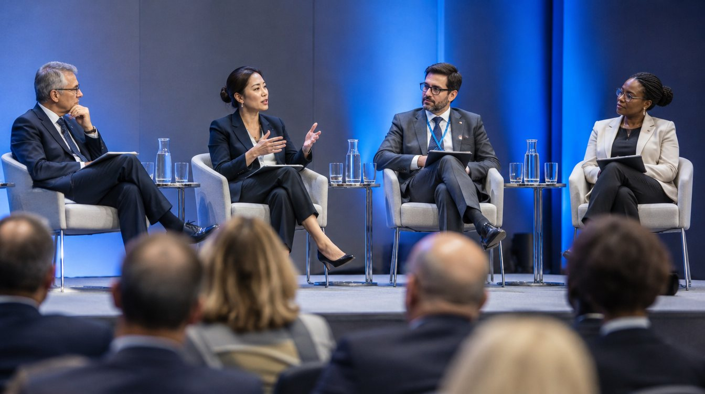

Vizepräsident Oberreiter beim Europäischen Forum für Sonderfälle: Ein Glossar für das Unvergleichliche
In Brüssel tauschten sich Vertreterinnen und Vertreter aus 19 Staaten über den Umgang mit grenzüberschreitenden Sonderfällen aus. Einig war man sich vor allem darin, dass man sich noch nicht einig ist, wie „besonders“ zu übersetzen ist.

Vizepräsident Matthias Oberreiter hat das BAbA vom 30. Juni bis 2. Juli 2026 beim diesjährigen Europäischen Forum für Sonderfälle in Brüssel vertreten. Das Forum ist ein informelles Netzwerk von Verwaltungen, die – wie das BAbA – mit Angelegenheiten befasst sind, für die sich in ihren Staaten sonst niemand zuständig fühlt. In diesem Jahr nahmen Delegationen aus 19 Staaten teil; zwei weitere hatten zugesagt, konnten aber wegen einer ungeklärten Zuständigkeit für ihre Reisekostenabrechnung nicht anreisen.
Das deutsche Modell
Im Mittelpunkt standen Verfahren, die in mehreren Staaten zugleich als besonders gelten. Oberreiter stellte das deutsche Modell der Auffangzuständigkeit nach § 2 BAbAG vor, das nach seinen Worten auf einem einfachen Grundsatz beruht: Am Ende muss jemand einen Bescheid unterschreiben. Großes Interesse fand die föderale Komponente. Weil in Deutschland neben dem Bund auch 16 Länder Zuständigkeiten haben, muss das BAbA in vielen Fällen zunächst klären, ob eine Angelegenheit auf Bundes- oder auf Landesebene niemandem zugeordnet ist.
„Viele Kolleginnen und Kollegen haben gefragt, wie wir mit 17 Gesetzgebern zurechtkommen“, sagte Oberreiter. „Ich habe geantwortet: mit 17 Ordnern. Das wurde als Scherz verstanden. Ich habe es im Anschluss nicht richtiggestellt.“
Dr. Nora Weißenfels, Leiterin des Referats Grenzfälle und Sonderkonstellationen, stellte in einem Workshop einen Fall aus dem Jahr 2024 vor: Auf einem Ausflugsschiff war ein Regenschirm gefunden worden, der während der Fahrt – je nach Rechtsauffassung – drei Staaten oder keinem Staat zuzuordnen war. „Das Verfahren ist bis heute nicht abgeschlossen“, so Weißenfels. „Aber wir haben inzwischen eine gemeinsame Aktenführung, und der Regenschirm wird trocken gelagert.“
Das Glossar
Die Teilnehmenden vereinbarten, bis 2027 ein gemeinsames Glossar besonderer Angelegenheiten zu erarbeiten. Schon in der ersten Arbeitssitzung zeigte sich die Tragweite: Für das deutsche Wort „besonders“ wurden 23 Übersetzungsvorschläge eingereicht, von denen sich keiner als vollständig deckungsgleich erwies. Der Begriff „Zuständigkeit“ wurde vorläufig zurückgestellt, weil sich die Delegationen nicht einigen konnten, wer für seine Definition zuständig ist.
Das BAbA hat angeboten, die Federführung für die deutschsprachigen Einträge zu übernehmen. Eine Abstimmung mit den Ländern ist eingeleitet, nachdem drei Länder darauf hingewiesen haben, dass sie über eigene, historisch gewachsene Begriffe für das Besondere verfügen. Zur Vorbereitung hat das Referat 13 eine Synopse erstellt, die 41 Begriffe auf 9 Seiten gegenüberstellt.
Am Rande des Forums unterzeichnete Oberreiter eine Absichtserklärung mit zwei Partnerverwaltungen über den Austausch von Beschäftigten. Ab 2027 sollen jährlich bis zu sechs Beschäftigte des BAbA für jeweils drei Monate bei Partnerbehörden hospitieren. Das Auswahlverfahren ließ sich bislang keiner bestehenden Kategorie zuordnen und wird daher vorläufig vom Referat 11 betreut.
Hinweis: Das nächste Forum findet 2027 in Ljubljana statt. Anfragen zur grenzüberschreitenden Zusammenarbeit richten Sie bitte an das Büro des Vizepräsidenten. Anfragen, bei denen noch nicht feststeht, ob sie eine Grenze überschreiten, an das Referat 13.